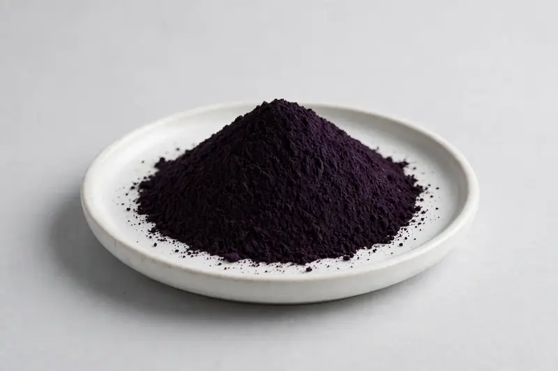

Black Carrot — a clean-label anthocyanin colorant for food and beverage lines.

Overview
Black carrot extract comes from the root of dark purple Daucus carota cultivars and is one of the most widely used natural red-to-purple colorants. Buyers typically specify anthocyanin content and color strength. Demand tracks clean-label reformulation in beverages, confectionery and dairy alternatives. We are a Xi'an-based trading company sourcing through vetted partner producers against buyer-declared color and marker targets.
Specifications below reflect commonly requested options in the market — not a stock list. Share your target spec and we'll confirm exactly what we can supply, honestly.
| Specification | Details |
|---|---|
| Botanical identity | Black carrot extract powder (Daucus carota black cultivar root) |
| Source material | Root |
| Marker compound | Commonly requested spec grades: anthocyanin content grades and color strength options; powder and liquid-compatible grades quoted per target specification |
| Appearance | Deep purple-black fine powder |
| Analytical methods | Methods referenced in buyer specifications: HPLC, UV-Vis |
| Mesh size | Typically 80–100 mesh (confirm per inquiry) |
| Testing | COA/TDS arranged on request; scope agreed per your spec |
Applications
Documentation
We don't claim in-house labs or certifications we don't hold. COA and TDS documents can be arranged on request, and testing scope is agreed against your specification before supply.
FAQ
Related products
Rehmannia glutinosa
Key marker: 10:1 or catalpol
View specs →Camellia sinensis (pu-erh)
Key marker: Polyphenols / theabrownins
View specs →Arctium lappa
Key marker: 10:1 or inulin
View specs →Wolffia globosa
Key marker: Protein
View specs →Angelica sinensis
Key marker: Ferulic Acid
View specs →Send your target spec and volumes — we'll respond with a tailored quotation.
Request a Quote